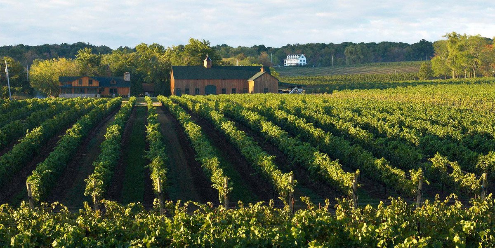
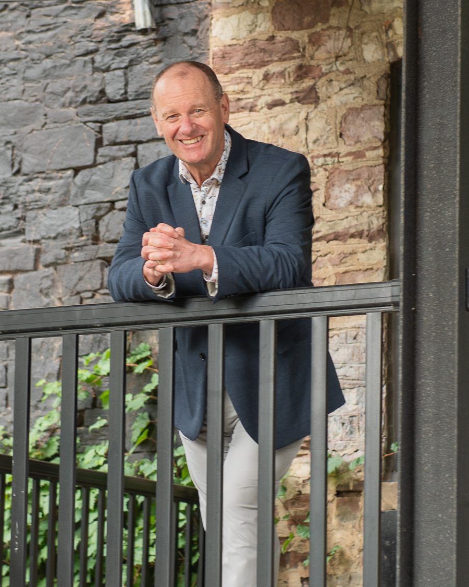
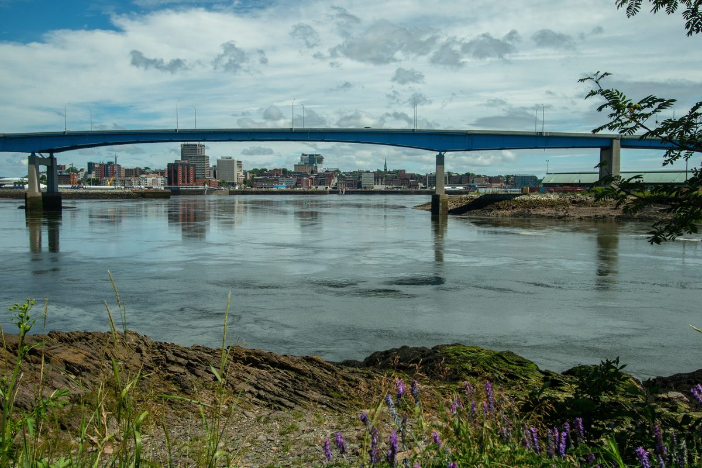
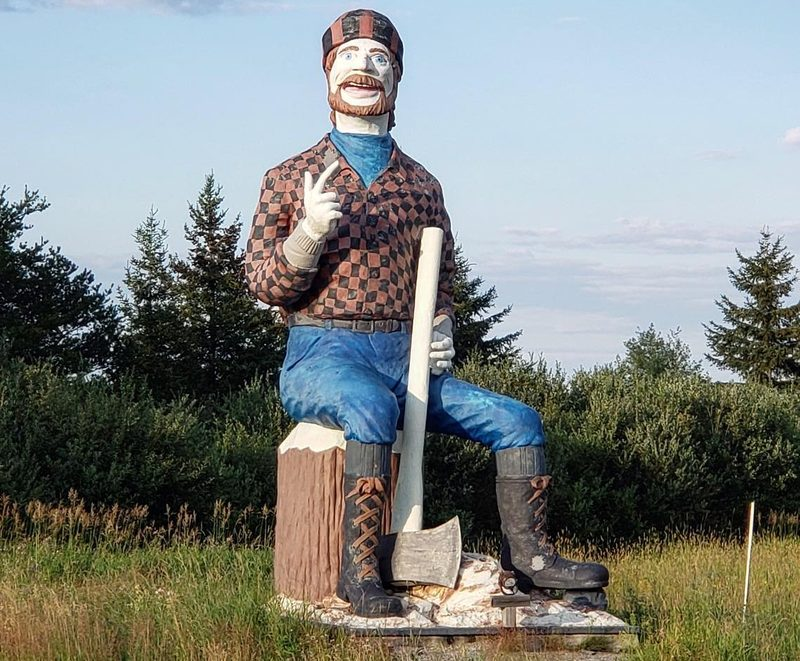
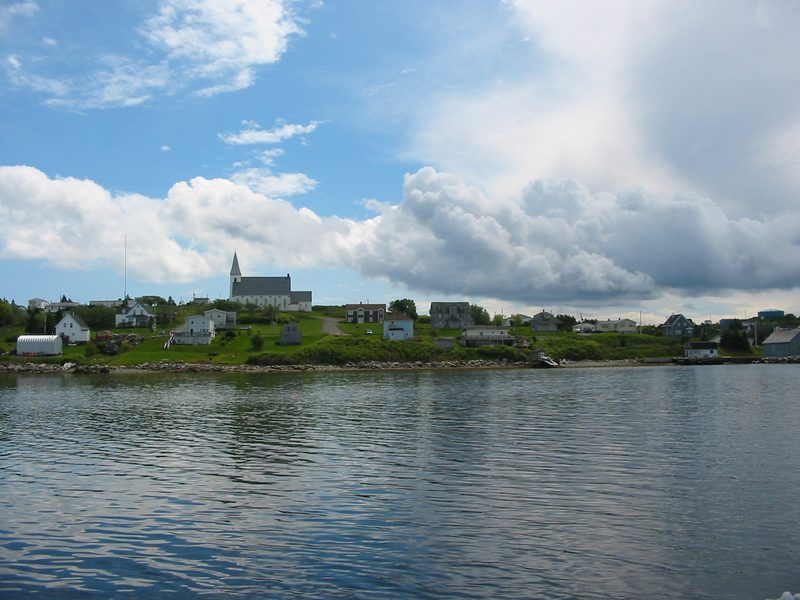
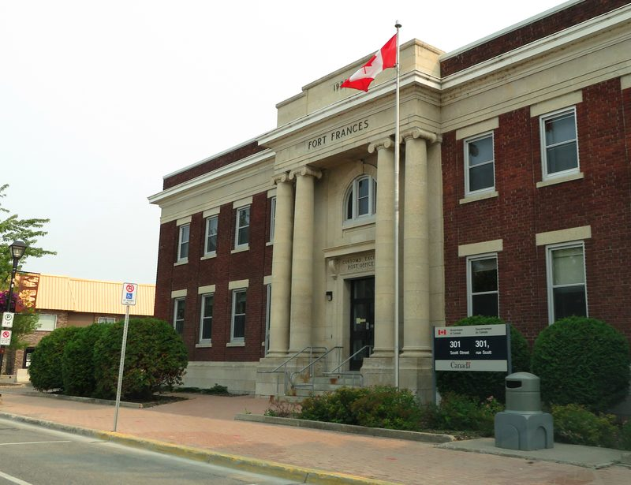
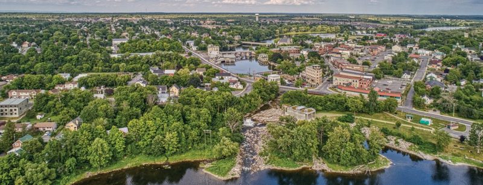

About
Bruce Peever, CMC
Founder & Principal, Baile Mór Strategy Group
Great towns need big ideas.

Your community, council, or institution faces decisions that will shape the next decade — and deserves a strategic partner who has sat on both sides of the table, as client and consultant.
For more than 30 years, I’ve worked alongside municipal governments, universities, and public sector organizations across Canada — first as a Chief Administrative Officer, later as a Partner in KPMG’s Public Sector Practice. Across hundreds of engagements, from small rural townships to Toronto, Ottawa, and Halifax, the goal has stayed the same: big ideas, applied with practical rigour, in service of stronger, more resilient communities.
You deserve the same calibre of strategic counsel as the country’s largest organizations — delivered personally, from start to finish. That’s why Baile Mór is lean, founder-led, and focused entirely on real answers. The name is Gaelic for “great town” — a reminder that impact comes from the boldness of the thinking, not the size of the firm.
Here’s how I can help
-
Financial Strategy
Connecting service levels, infrastructure, growth, taxation, and reserves into a practical long-term plan, as I’ve done for Cornwall, Mississippi Mills, Wilmot, Iroquois Falls, and Saanich.
-
Governance
Independent advice that strengthens accountability and decision-making, reflected in reviews for Charlottetown, Burlington Economic Development Corporation, the London Transit Commission, and numerous public agencies.
-
Operational Improvement
Hundreds of engagements assessing structures and service models, delivering implementation-ready roadmaps, not reports that sit on a shelf.
-
AI Strategy
Moving you from curiosity to practical value with governance frameworks and responsible AI policies that manage risk while capturing real benefit.
The work that matters is never about small fixes — it’s about asking the harder question and building something that lasts.
Communities
Every community has a story worth building on.
From Nova Scotia to Northwestern Ontario, the places that shape Canada come in every size.

Saint JohnNew Brunswick 
Iroquois FallsOntario 
CansoNova Scotia WaterlooOntario 
Fort FrancesOntario 
Mississippi MillsOntario
Saint John photo by diearle on Pixabay; sources for the other photos to be confirmed. See photo credits and licences.
Great towns need big ideas.
I’d welcome the chance to bring mine to yours.